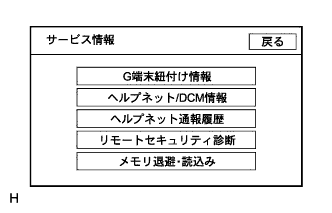
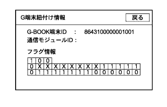
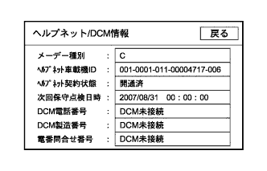

).
).G-BOOK System Diagnosis System |
).). |
| Display | Description |
|---|---|
| G Terminal Link Information | G-BOOK terminal ID, flag information, etc. are displayed. |
| HELPNET/DCM Information | HELPNET-related ID, contract status, maintenance check date, etc. are displayed |
| HELPNET Report History | HELPNET call history (date/time, status) is displayed (see ) |
| Remote Security Diagnosis | Remote security check results are displayed (not displayed on this model) |
| Memory Save/Load | Saves and loads memory using a tool |
 |
G Terminal Link Information
Start diagnosis and display the diagnosis inspection menu screen.
Select "G Terminal Association Information" on the diagnosis check menu screen to display the G terminal association information screen.
Check the G terminal association information.
| Display | Description |
|---|---|
| G-BOOK Terminal ID | Reads and displays the G-BOOK terminal ID held by the navigation receiver assembly |
| Communication Module ID | Displays the 11-digit serial number of the telematics transceiver (not displayed on this model) |
| Flag Information | Displays the G-BOOK contract and service flags held by the navigation receiver assembly |
 |
HELPNET/DCM Information
Start diagnosis and display the diagnosis inspection menu screen.
Select "HELPNET/DCM Information" on the diagnosis check menu screen to display the HELPNET/DCM information screen.
Check the content.
| Item | Display Content |
|---|---|
| Mayday Type | Displays the type of HELPNET in-vehicle unit installed ("C (one-touch type)" is displayed on this model) |
| HELPNET In-vehicle Unit ID | Displays the ID of the installed HELPNET in-vehicle unit |
| HELPNET Contract Status | Displays the HELPNET service contract status as follows
|
| Next Maintenance Check Date and Time | Displays the next automatic maintenance check date |
| DCM Telephone Number | Displays "DCM Not Connected" |
| DCM Serial Number | Displays "DCM Not Connected" |
| Telephone Number Inquiry Number | Displays "DCM Not Connected" |